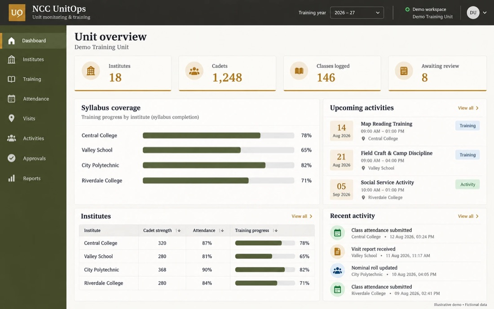
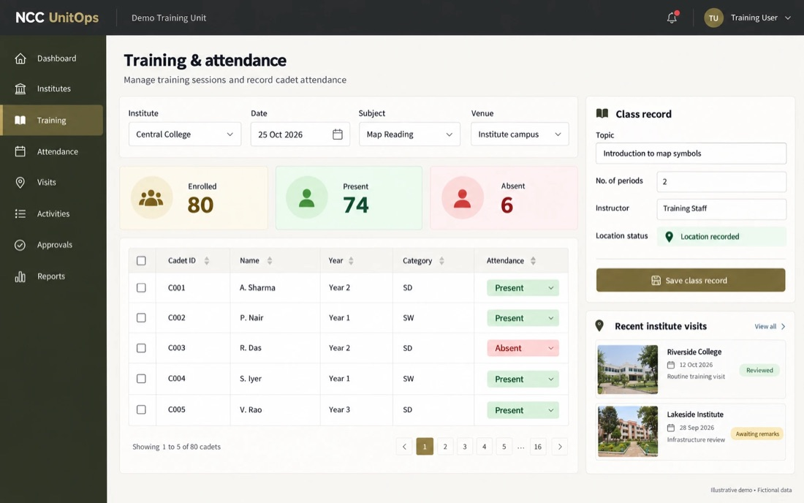

Institutional Operations & Monitoring
Help supervisors see what happened, where it happened, who took part — and what needs attention — across every institute or location they oversee.
Returns arrive late, in different formats, and say little.
When one office supervises dozens of institutes, it relies on calls, WhatsApp messages and spreadsheets. This system gives each location a simple way to record activity as it happens, and gives supervisors one consistent view.
- Education groups and training centres
- Government field offices
- NGOs running programmes at many sites
- Any organisation supervising several locations
What it does
- Institute and staff records
- Roster import from Excel and attendance export
- Class and activity logging
- Syllabus coverage and training progress
- Visit records with photographs and supervisory remarks
- Location-supported activity recording
- Approval workflows and management dashboards
- Activity calendars
- Expenditure claims with supporting bills, review and approval
- Printable reports and document exports
- Works on any phone browser — no app store needed
Screens
Illustrative screens with fictional data. Click any screen to see it full size.




A clear picture, without the phone calls.
Supervisors see progress, gaps and pending approvals for every location in one place, and the reports they need come straight from the records.
The system was first developed to monitor NCC training and activities across many affiliated institutes.
What we customise
- Your locations, roles and reporting chain
- Syllabus, activity types and targets
- Claim types, limits and approvals
- Report formats and exports
Working pilot. In use as a pilot and the foundation for customer-specific deployments — each rollout is scoped, hardened and tested for the customer's scale.
See it with your own process in mind.
Tell us how you work today. We will show you what fits as it is, and what we would adapt.